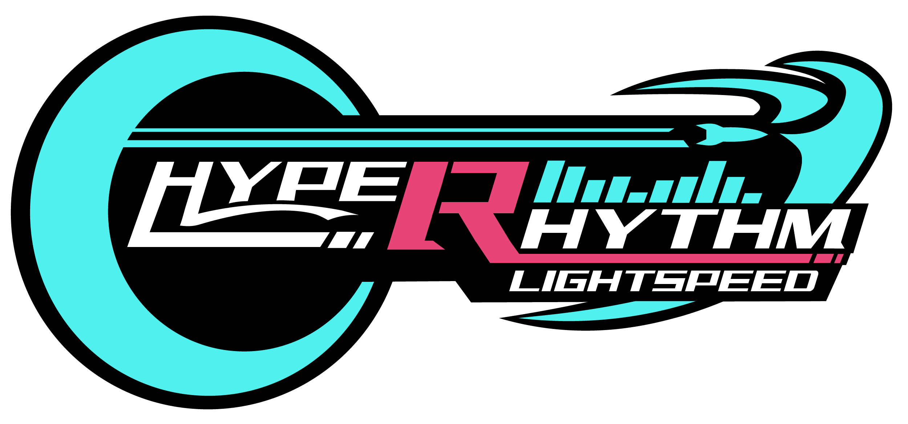

ur on https — to connect, you need to trust the game's certificate first:
tap here to open the game's cert page
(accept the warning), then come back and hit connect,,,

Connect
enter the displayed ip in game